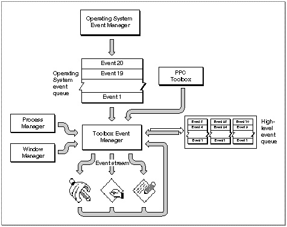

Introduction to Events
Most Macintosh applications receive information about hardware and software occurrences that require a response from the application, through events. An event is the means by which the Event Manager communicates information about user actions, changes in the processing status of the application, and other occurrences that require a response from the application.The Event Manager communicates information about events that occur through the event record. The
EventRecorddata type defines the event record. The event record contains information about what type of event occurred (a mouse click or keypress, for example) and contains additional information associated with the event (for example, for a keypress the Event Manager also reports which key was pressed).Most Macintosh applications are event-driven--that is, they respond to various changes or occurrences and take action based on the nature of the event. Typically, a Macintosh application repeatedly checks to see if an event has occurred and, if so, responds to the event. If no events are pending, the application can choose to relinquish the processor for a specified amount of time or can perform other tasks before checking again to see whether an event has occurred.
Your application typically retrieves events from the Event Manager and also relinquishes processor time by using the
WaitNextEventfunction. If any events are pending for your application, theWaitNextEventfunction returns the event to your application. If no events are pending for your application, theWaitNextEventfunction may allocate processing time to other applications.When multiple applications are open, the user chooses one to interact with at any given time. The active application (or foreground process) is the one currently interacting with the user. The foreground process displays its menu bar, and its windows are in front of the windows of all other applications. (The term process refers to an open application or, in some cases, an open desk accessory.)
There can be only one foreground process at any one time; however, multiple processes can exist in the background. A background process is a process that is not currently interacting with the user. The foreground process has first priority for accessing the
CPU. Other processes can access the CPU only when the foreground process yields time to them.By using
WaitNextEventto retrieve events, you allow other applications to make use of processing time that your application would otherwise not use. When your application is in the background, it in turn can receive processing time when other applications relinquish the CPU. UsingWaitNextEventalso allows users to switch between multiple open applications.An application that is in the background can get CPU time but can't interact with the user while it is in the background. (However, the user can choose to bring the application to the foreground--for example, by clicking in one of the application's windows.) An application can also post a notification request using the Notification Manager if the application is in the background and requires the user's attention. Any application that has the
canBackgroundflag set in its size ('SIZE') resource is eligible to obtain access to the CPU when it is in the background.At any given time a process is either in the foreground or the background; a process can switch between the two states at well-defined times.
The Event Manager ensures that switching between applications occurs in a smooth fashion--by sending your application an event when it is about to be suspended and sending it an event when it has processing time again and can resume executing. The Event Manager and Process Manager coordinate this switching and scheduling of processor time among many applications.
Your application can receive various types of events: low-level events, operating-system events, and high-level events.
The Event Manager returns low-level events to your application for occurrences such as the user pressing the mouse button, releasing the mouse button, pressing a key on the keyboard, or inserting a disk. The Event Manager also returns low-level events to your application if your application needs to activate (make changes to a window based on whether it is in front or not) or update (redraw the contents of) one of its windows. When your application requests an event and there are no other events to report, the Event Manager returns a null event.
The Event Manager returns operating-system events to your application when the processing status of your application is about to change or has changed. For example, if
a user brings your application to the foreground, the Process Manager sends an event through the Event Manager to your application. Some of the work of reactivating your application is done automatically, both by the Process Manager and by the Window Manager; your application must take care of any further processing needed as a result of your application being reactivated.The Event Manager returns high-level events to your application as a result of communication directed to your application from another application or process.
Low-level events, except for update events and null events, are always directed to the foreground process. Operating-system events are also always directed to the foreground process. High-level events, update events, and null events can be directed to the foreground process or background processes.
You can specify which types of events you want your application to receive. You do this by specifying an event mask as a parameter to various Event Manager routines. An event mask allows you to mask out the events you are not interested in receiving. For example, you can accept all events except high-level events.
Events can originate from a number of different sources: the Operating System Event Manager, Window Manager, Process Manager, and PPC Toolbox. Figure 2-1 shows the relationships between the Toolbox Event Manager, other parts of the system software, and your application.
Figure 2-1 Sources of events sent to your application

The Operating System Event Manager creates and maintains a queue referred to as the Operating System event queue. The Operating System Event Manager detects and reports low-level hardware-related events such as mouse clicks, keypresses, and disk insertions. The Operating System Event Manager places these events in the Operating System event queue. The Toolbox Event Manager retrieves events from this event queue and returns events, one at a time at your application's request, to your application.
A maximum of 20 events can be pending in the Operating System event queue. If the Operating System event queue becomes full, the Operating System Event Manager begins to discard old events to make room for new ones as events are posted. The Operating System Event Manager always discards the oldest event in the queue when
it must discard an event. However, this is not a common occurrence; your application typically processes events much faster than the user can generate them. The actual capacity of the event queue is determined by system startup information stored on
the startup volume; see the chapter "File Manager" in Inside Macintosh: Files for system startup information.The Event Manager can also report events from the Window Manager and Process Manager. If a window needs to be updated, activated, or deactivated, the
Window Manager directs an event to the Toolbox Event Manager. Similarly, the
Process Manager directs an event to the Toolbox Event Manager if the processing
status of your application changes. The Toolbox Event Manager reports these events
to your application.Your application can use the Event Manager to send and receive high-level events. To transmit high-level events between applications, the Event Manager uses the PPC Toolbox on behalf of your application. For each open application capable of receiving high-level events, the Event Manager maintains a separate queue, referred to as the application's high-level event queue, to store high-level events. The size of an application's high-level event queue is limited only by the amount of available memory.
- Note
- On computers running System 6, MultiFinder provides some of
the capabilities supplied by the Process Manager in System 7. On computers running System 6 without MultiFinder, only a single- application environment is supported.
Your application's event stream consists of those events that are available to your application for retrieval when it makes a request for an event. For example, when your application is in the background, its event stream can contain only update events, null events, and high-level events.
When your application asks the Event Manager for the next event, the Event Manager returns the next available event according to its priority. In general, the Event Manager returns events in this order of priority:
The next sections describe low-level events, operating-system events, and high-level events in greater detail.
- low-level events
- operating-system events
- high-level events
Subtopics
- Low-Level Events
- Operating-System Events
- High-Level Events
- Priority of Events
- Switching Contexts